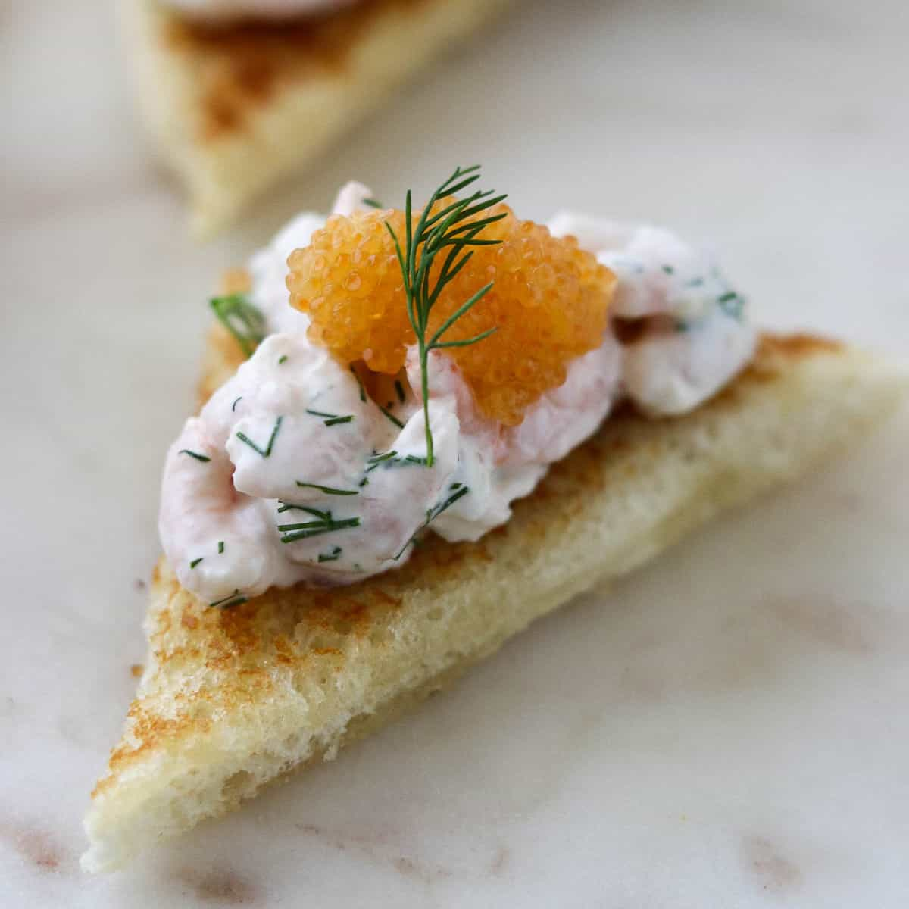

Swedish Shrimp Toast

Embrace a piece of Sweden with a traditional starter for all... (Toast Skagen).
Ingredients
- ¼ small bunch dill
- ¼ medium red onion
- 1 12-oz. bag frozen cooked peeled, deveined, tail-off small shrimp (preferably North Atlantic), thawed
- 1 lemon
- 3 Tbsp. mayonnaise (preferably Hellmann's or Best Foods)
- 2 Tbsp. crème fraîche
- ¼ tsp. kosher salt, plus more
- Freshly ground black pepper
- 2 Tbsp. unsalted butter
- 4 slices white bread (such as Pepperidge Farm)
- 4 tsp. bleak fish or whitefish roe (optional)
Directions
- Finely chop tender sprigs from ¼ small bunch dill to yield ¼ cup.; place in a large bowl. Set some larger sprigs aside for serving.
- Finely chop ¼ medium red onion (you should have about 3 Tbsp.) and add to bowl with dill.
- Thoroughly pat dry one 12-oz. bag frozen cooked small shrimp, thawed, with a kitchen towel or paper towels. Coarsely chop half of the shrimp. Place all shrimp in bowl with onion and dill.
- Using a Microplane, finely grate zest of 1 lemon into bowl, then cut lemon in half and squeeze juice of one half through your hand or a fine-mesh sieve into a small bowl; you should have 1 Tbsp. Add lemon juice to bowl with shrimp and mix gently with a rubber spatula to combine.
- Cut remaining lemon half into 4 wedges and set aside for serving.
- Add 3 Tbsp. mayonnaise, 2 Tbsp. crème fraîche, and ¼ tsp. kosher salt to shrimp; mix gently to coat. Season with freshly ground black pepper and more salt if needed. Cover with plastic wrap or transfer to an airtight container and cover. Chill at least 30 minutes and up to 1 hour.
- When ready to serve toast, melt 2 Tbsp. unsalted butter in a large skillet over medium-low heat. As soon as butter is sizzling, arrange 4 slices white bread in pan and cook, turning a few times to allow both sides to absorb some butter, until golden brown, about 4 minutes.
- Transfer toast to plates and top with shrimp salad. Spoon 1 tsp. bleak fish or whitefish roe (if using) over each toast and top with reserved dill leaves. Serve with reserved lemon wedges for squeezing over.